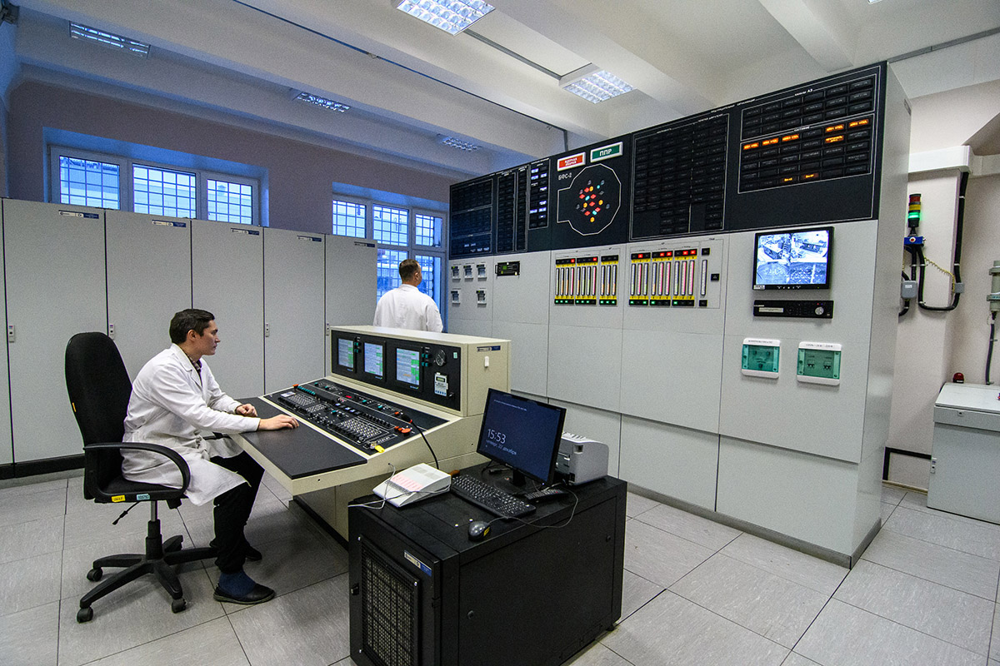
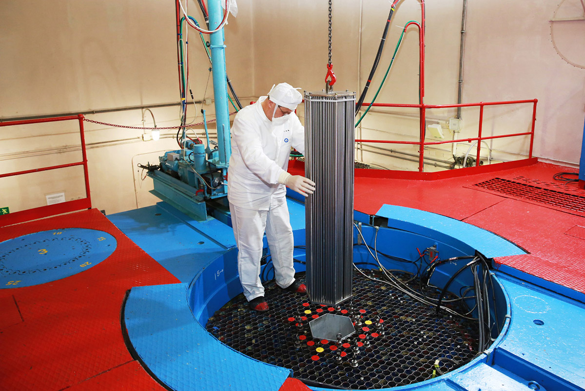
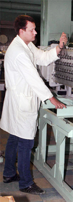
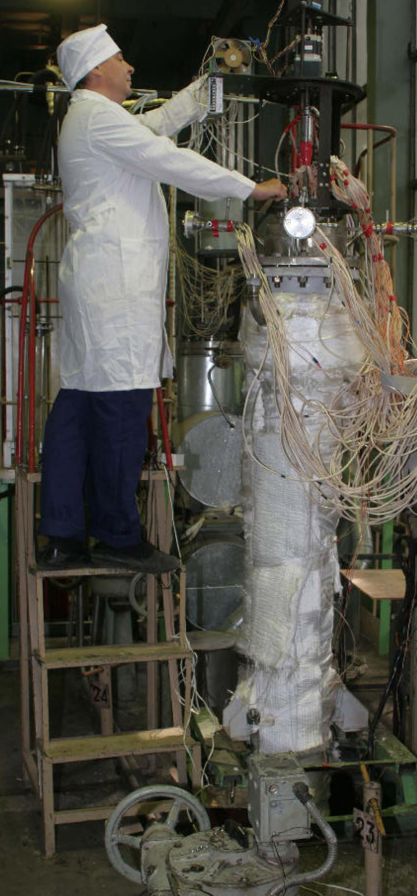
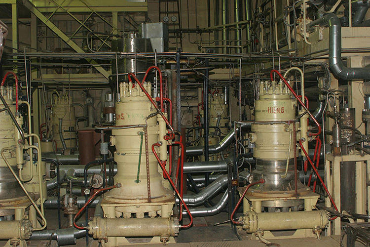
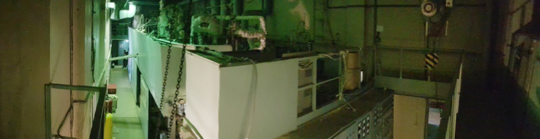
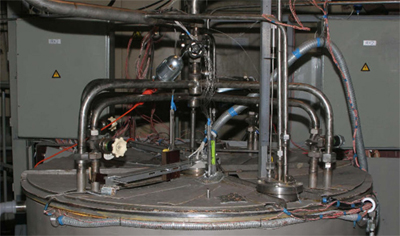
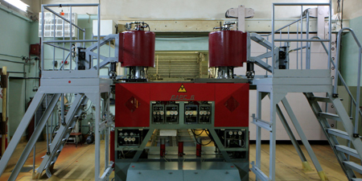

Научные организации Обнинска
Каталог для чтения без интернета. Метки карты обозначают территории. Фото и подписи сохранены локально.
ФЭИ
Физико-энергетический институт имени А. И. Лейпунского
Обнинск, площадь Бондаренко, 1
Один из научных центров, с которых началась история Обнинска. Институт вырос из Лаборатории «В» и участвовал в создании первой в мире атомной электростанции. Здесь развивают реакторные технологии, прикладную ядерную физику и медицинское применение радиоизотопов.
Научный профиль
Институт исследует физику реакторов и теплообмен, проверяет расчётные модели на экспериментальных установках. Разработки связывают фундаментальную ядерную физику с энергетикой и изотопными технологиями.
Нейтронная физика
На критических стендах БФС моделируют активные зоны и измеряют их нейтронно-физические характеристики. Такие эксперименты помогают проверить расчёты до реализации реакторного проекта.
Теплофизика
На стендах изучают движение теплоносителя и отвод тепла. Сравнение измерений и расчётов необходимо для обоснования проектных решений.
Материалы и изотопы
Экспериментальная база включает исследовательские, испытательные и радиохимические комплексы. Отдельное направление связано с медицинскими радиоизотопами.
Примеры разработок и работ
- БН-600
- Реактор на быстрых нейтронах — один из реализованных проектов, представленных ФЭИ. Энергоблок расположен на Белоярской АЭС, а не в Обнинске.
- БН-800
- Развитие направления быстрых реакторов и технологий замкнутого топливного цикла.
- Медицинские радиоизотопы
- Применение результатов ядерных исследований в диагностике и терапии.
- Комплекс БФС
- Экспериментальное моделирование активных зон и проверка нейтронно-физических расчётов.
- Стенд «6Б»
- Теплогидравлические исследования моделей оборудования с жидкометаллическим теплоносителем.
- Исследовательские комплексы
- Испытания материалов и компонентов в составе экспериментальной базы института.
История
- 1946: Создание Лаборатории «В».
- 1954: Начало работы первой Обнинской АЭС.
- 1960: Институт получает название «Физико-энергетический».
Термины
- Быстрые нейтроны
- Нейтроны, которые в таком реакторе не замедляют до тепловых энергий.
- Теплоноситель
- Вещество, которое переносит тепло от нагретого оборудования.
- Критический стенд
- Экспериментальная установка для исследования нейтронных характеристик модели реактора.
На примере ФЭИ видно, как эксперимент становится частью инженерного проекта: сначала модель и измерение, затем проверка расчёта и обоснование решения.
Связанные профессии
Физик-ядерщик, Инженер-теплофизик, Радиохимик, Инженер-исследователь. Это примеры направлений, не вакансии.
Фотографии

Критический ядерный стенд БФС-1. Фото экспериментальной базы ФЭИ. ФЭИ, официальный сайт
Критический ядерный стенд БФС-2. Фото экспериментальной базы ФЭИ. ФЭИ, официальный сайт
Гидравлические стенды. Фото экспериментальной базы ФЭИ. ФЭИ, официальный сайт
Теплогидравлические жидкометаллические стенды (Na, Na-K). Фото экспериментальной базы ФЭИ. ФЭИ, официальный сайт
Теплогидравлические водяные стенды. Фото экспериментальной базы ФЭИ. ФЭИ, официальный сайт
Технологические жидкометаллические стенды (Na, Na-K). Фото экспериментальной базы ФЭИ. ФЭИ, официальный сайт
Стенды СПРУТ, СТФ. Фото экспериментальной базы ФЭИ. ФЭИ, официальный сайт
Двухзонный импульсный реактор БАРС-6. Фото экспериментальной базы ФЭИ. ФЭИ, официальный сайтИсточники
- https://www.ippe.ru/facilities
- https://www.ippe.ru/realized-projects/fast-neutrons-reactors/269-bn-600
- https://www.ippe.ru/realized-projects/fast-neutrons-reactors/270-bn800
- https://www.ippe.ru/reactors/bfs-fast-critical-assembly/fast-reactor-bfs-researches
- https://www.ippe.ru/npf-safety/facilities/heat-hydraulic-liquid-metal/178-6b
- https://www.ippe.ru/departments
Открытая лицензия на фотографии не заявлена, если иное не указано в источнике. Права сохраняются за правообладателями.ОНПП «Технология»
Обнинское научно-производственное предприятие «Технология» имени А. Г. Ромашина
Обнинск, Киевское шоссе, 15
Научно-производственное предприятие, разрабатывающее неметаллические материалы и изделия из них. Его специализация — композиты, техническое стекло и керамика для сложных инженерных задач. История предприятия началась со строительства экспериментального завода в 1959 году.
Научный профиль
Научный профиль предприятия связан с созданием новых неметаллических материалов, исследованием их свойств и разработкой технологий изготовления изделий. Производство опирается на собственные прикладные исследования.
Стекло и конструкционная оптика
Разработка стекломатериалов и изделий остекления для техники. Для таких изделий важны оптические свойства и стойкость к эксплуатационным нагрузкам.
Техническая керамика
Исследования составов и технологий получения керамических материалов для работы при нагреве, износе и воздействии агрессивных сред.
Полимерные композиты
Создание материалов и конструкций, в которых армирующие элементы и связующее работают совместно. Направление объединяет материаловедение и технологию производства.
Примеры разработок и работ
- Композитные конструкции
- Изделия из неметаллических материалов для инженерных задач, где важны масса и прочность.
- Авиационное остекление
- Прозрачные элементы для авиационной техники: отдельное направление материаловедения и производства.
- Техническая керамика
- Материалы для изделий с особыми требованиями к эксплуатационным свойствам.
- Конструкционная оптика
- Научное направление, связанное со стекломатериалами и остеклением техники.
- Керамика для промышленности
- Теплозащитные, износостойкие и электроизоляционные изделия.
- Испытания материалов
- Изучение физико-механических свойств материалов для перспективных конструкций.
История
- 1959: Начало строительства экспериментального завода.
- 1978: Создание НПП «Технология».
- 1994: Получение статуса государственного научного центра.
Термины
- Композит
- Материал из нескольких компонентов, сочетание которых даёт нужные свойства.
- Конструкционная керамика
- Керамические материалы, рассчитанные на механические и тепловые нагрузки.
- Прикладное исследование
- Исследование, направленное на решение конкретной практической задачи.
Предприятие показывает связь химии и физики с промышленностью: свойства нового материала определяют возможности будущего изделия.
Связанные профессии
Инженер-материаловед, Химик-технолог, Конструктор, Специалист по испытаниям. Это примеры направлений, не вакансии.
Фотографии
Источники
- https://www.admobninsk.ru/obninsk/gorod/scientific-centers/technologiya/
- https://ru.wikipedia.org/wiki/Технология_(обнинское_научно-производственное_предприятие)
- https://agnc.ru/gnc/6198
- https://rostec.ru/media/news/steklo-keramika-i-kompozity-tri-nauchnykh-kita-tekhnologii/
Открытая лицензия на фотографии не заявлена, если иное не указано в источнике. Права сохраняются за правообладателями.НПО «Тайфун»
Научно-производственное объединение «Тайфун»
Обнинск, улица Победы, 4
Научный и производственный центр Росгидромета, изучающий атмосферу и состояние окружающей среды. Специалисты занимаются экологическим мониторингом, метеорологией и оценкой распространения загрязнений. С работой центра связана знаменитая обнинская метеорологическая мачта.
Научный профиль
Объединение исследует атмосферу и загрязнение окружающей среды, разрабатывает приборы и информационные системы мониторинга. Научная работа включает наблюдения, лабораторные эксперименты и анализ данных.
Наблюдения за атмосферой
Высотная метеорологическая мачта ВММ-310 позволяет изучать температуру, влажность и ветер на разных уровнях. На прилегающей площадке проводят дополнительные наблюдения.
Физика облаков и аэрозолей
В аэрозольном корпусе размещены экспериментальные камеры и аэродинамические трубы. Они позволяют исследовать процессы в контролируемых условиях.
Экологический мониторинг
Обработка наблюдений помогает оценивать загрязнение и его распространение. Организация развивает информационно-аналитические системы для природоохранных задач.
Примеры разработок и работ
- Радиационный мониторинг
- Сбор и анализ наблюдений за радиационной обстановкой.
- Контроль загрязнения
- Исследование атмосферного воздуха и почв, включая тяжёлые металлы и стойкие загрязняющие вещества.
- Метеорологические наблюдения
- Изучение атмосферы с использованием измерительной инфраструктуры, в том числе высотной метеорологической мачты.
- ВММ-310
- Исследовательская мачта высотой 310 м для комплексных наблюдений за атмосферой.
- Аэрозольный корпус
- Экспериментальная база для исследования облаков, аэрозолей и атмосферных процессов.
- Информационные системы
- Сбор, обработка и представление экологических данных для мониторинга.
История
- 1958: Начало работы обнинского полигона ИПГ и ввод ВММ-310.
- 1964: Ввод аэрозольного корпуса.
- 1968: Создание Института экспериментальной метеорологии.
- 1986: Создание НПО «Тайфун» на базе ИЭМ и части подразделений ЦКБ ГМП.
- 1997: Создание Федерального информационно-аналитического центра Росгидромета.
Термины
- Мониторинг
- Систематические наблюдения за состоянием объекта и анализ изменений.
- Аэрозоль
- Мелкие твёрдые или жидкие частицы, взвешенные в газе.
- Метеорология
- Наука об атмосфере и происходящих в ней процессах.
Измерения приобретают практическую ценность после проверки и анализа: они помогают оценивать состояние среды и прогнозировать распространение загрязнений.
Связанные профессии
Метеоролог, Физик атмосферы, Эколог-исследователь, Разработчик систем мониторинга. Это примеры направлений, не вакансии.
Фотографии
Источники
- https://www.rpatyphoon.ru/about/info.php
- https://www.rpatyphoon.ru/activities/ecomonitoring/rgm.php
- https://www.rpatyphoon.ru/about/history.php
- https://www.rpatyphoon.ru/activities/gidrometeo/vmm.php
Открытая лицензия на фотографии не заявлена, если иное не указано в источнике. Права сохраняются за правообладателями.НИФХИ им. Карпова
Научно-исследовательский физико-химический институт имени Л. Я. Карпова — обнинская площадка
Обнинск, Киевское шоссе, 6
Обнинская площадка института объединяет исследования и производство в области радиационной химии и физики материалов. Среди направлений — радиофармацевтические препараты и обработка материалов ионизирующим излучением. Обнинский филиал был основан в 1959 году.
Научный профиль
На обнинской площадке исследуют воздействие ионизирующего излучения на вещества и разрабатывают ядерные, радиационные и химические технологии. Научные направления связаны с радиофармацевтикой и функциональными материалами.
Радиохимия и радиофармацевтика
Исследования и разработки направлены на получение радионуклидов и препаратов медицинского назначения, а также совершенствование технологий их производства.
Радиационная модификация
Облучение позволяет изменять свойства полимеров. Институт разрабатывает радиационно-сшитые и радиационно-модифицированные материалы.
Полупроводники
Ядерное легирование кремния относится к технологиям управляемого изменения свойств материала. Это самостоятельное направление деятельности института.
Примеры разработок и работ
- Радиофармацевтика
- Производство препаратов с радиоактивными изотопами для медицинского применения.
- Молибден-99
- Получение изотопа, используемого в цепочке производства средств радионуклидной диагностики.
- Обработка материалов
- Изменение свойств материалов с помощью ионизирующего излучения, включая исследования полупроводников.
- Ядерно-легированный кремний
- Полупроводниковый материал, свойства которого изменяют с помощью ядерно-физической технологии.
- Сшитый пенополиэтилен
- Пример полимерного материала из официального каталога института.
- Фильтрующие элементы
- Изделия из каталога, связанные с направлением защиты от аэрозолей.
История
- 1957: Решение о создании филиала в Обнинске, по истории на сайте института.
- 1959: Год основания обнинского филиала, указанный в исходной справочной подборке.
- 1962: Пуск мощных кобальтовых гамма-установок.
- 1964: Пуск исследовательского реактора ВВР-ц.
Термины
- Радионуклид
- Разновидность атомов с нестабильным ядром.
- Радиофармпрепарат
- Препарат, содержащий радионуклид и предназначенный для медицинского применения.
- Легирование
- Введение примесей для получения нужных свойств материала.
На примере института можно увидеть разные мирные применения ядерных технологий: получение медицинских изотопов и изменение свойств материалов.
Связанные профессии
Радиохимик, Физик-исследователь, Химик полимеров, Инженер-технолог. Это примеры направлений, не вакансии.
Фотографии
Источники
- https://www.karpovipc.ru/
Открытая лицензия на фотографии не заявлена, если иное не указано в источнике. Права сохраняются за правообладателями.